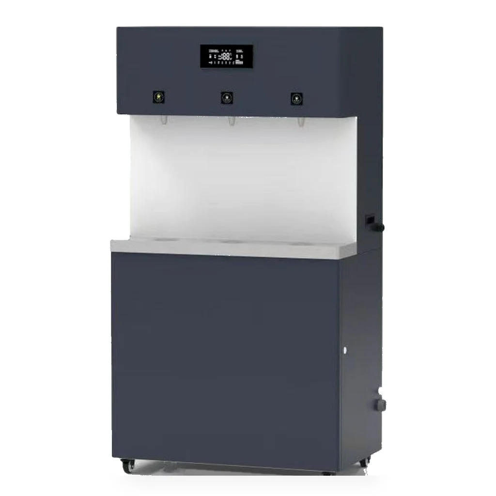

Ticari paslanmaz çelik RO su sebili E900-K27
RO su sebiliE900-K27 ofisler, fabrikalar, okullar ve hastaneler için paslanmaz çelik doğrudan içme suyu sebilidir. 27L sıcak su tankı, 120 L/H sıcak ve ılık su çıkışı, 3kW güç, mikro bilgisayarlı LCD ekran ve isteğe bağlı 400G RO arıtıcıyı bir araya getirir.
Teknik özellikler
| Model | E900-K27 |
|---|---|
| Ölçü | 800 x 480 x 1520 mm |
| Sıcak su tankı | 27L |
| Voltaj | 220 V |
| Güç | 3kW |
| Çıkış | Sıcak ve ılık su, 120 L/H |
| Ekran | Mikro bilgisayarlı LCD ekran |
| Musluk çıkışları | 1 sıcak + 2 ılık |
| Musluk düğmesi | Hafif dokunuşlu düğme |
| Malzeme | Nano kaplamalı paslanmaz çelik |
| Standart filtrasyon | PP + sıkıştırılmış aktif karbon; PP + RO membran; son aktif karbon (T33) |
| Opsiyonel RO arıtıcı | 400G RO arıtıcı |
| Kullanım alanları | Ofisler, fabrikalar, okullar ve hastaneler |
Filtrasyon ve RO seçeneği
PP + sıkıştırılmış aktif karbon; PP + RO membran; son aktif karbon (T33)
Ticari uygulamalar
Ofisler, fabrikalar, okullar ve hastaneler
OEM/ODM proje desteği
E900-K27 ofisler, fabrikalar, okullar ve hastaneler için paslanmaz çelik doğrudan içme suyu sebilidir. 27L sıcak su tankı, 120 L/H sıcak ve ılık su çıkışı, 3kW güç, mikro bilgisayarlı LCD ekran ve isteğe bağlı 400G RO arıtıcıyı bir araya getirir.
Sık sorulan sorular
PP + sıkıştırılmış aktif karbon; PP + RO membran; son aktif karbon (T33)
Sıcak ve ılık su, 120 L/H
E900-K27 ofisler, fabrikalar, okullar ve hastaneler için paslanmaz çelik doğrudan içme suyu sebilidir. 27L sıcak su tankı, 120 L/H sıcak ve ılık su çıkışı, 3kW güç, mikro bilgisayarlı LCD ekran ve isteğe bağlı 400G RO arıtıcıyı bir araya getirir.
OEM teklifi isteyin
E900-K27 ofisler, fabrikalar, okullar ve hastaneler için paslanmaz çelik doğrudan içme suyu sebilidir. 27L sıcak su tankı, 120 L/H sıcak ve ılık su çıkışı, 3kW güç, mikro bilgisayarlı LCD ekran ve isteğe bağlı 400G RO arıtıcıyı bir araya getirir.